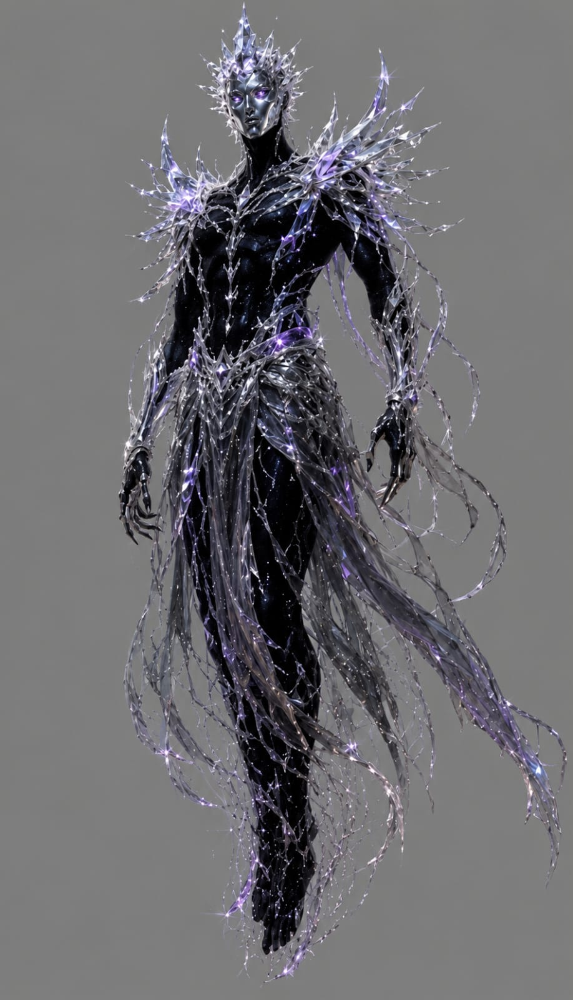

Expediente de la compañía · Nivel 4
Aejaz
Aasimar · Sorcerer · Artisan
Nació humano y una explosión cambió su cuerpo. En Erindor encontró un nombre para su nueva naturaleza y una posibilidad de comprenderla.
CA14
PG30
Velocidad30 ft
Iniciativa+4
Corte mecánico de ShardTabletop · 9 sep 2026. Sólo estadísticas base.
Lectura mecánica
Atributos base
La página pública muestra únicamente el corte fundamental de la hoja. Capacidades, equipo, secretos y notas pertenecen a cada jugador.
STR10+0
DEX18+4
CON17+3
INT14+2
WIS14+2
CHA18+4
Archivo narrativo
Historia en construcción.
◇
Este espacio crecerá cuando su jugador comparta y apruebe el material público del personaje.